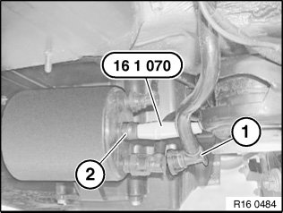
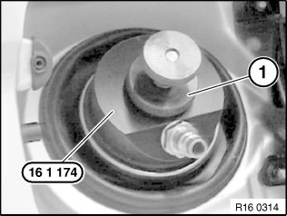
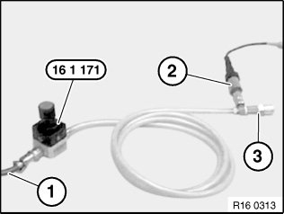
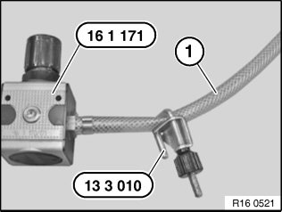

16 00 100 Checking Fuel Tank and Tank Ventilation System For Leaks
16 00 100 Checking Fuel Tank And Tank Ventilation System For Leaks
Special tools required:

Necessary preliminary tasks:
- Remove cover for carbon canister

The following procedure is only applicable to vehicles without the tank leak diagnosis module.
Comply with the following conditions in order to obtain plausible test results:
- Content of fuel tank:
1. Maximum 90 %
2. Minimum 13 % (reserve telltale must not light up).
- Put vehicle into workshop for at least 2 hours such that the fuel temperature corresponds to the workshop temperature. (Ideal fuel temperature approx. 10...20 °C)

Disconnect line to evaporation strainer (1) from carbon canister.
IMPORTANT:
Risk of breakage.
Carefully remove evaporation strainer from carbon canister.
seal opening (2) for evaporation strainer on carbon canister with special tool 16 1 070.

Remove fuel filler cap and connect special tool 16 1 174 to fuel filler neck.
Using thumbwheel (1), clamp special tool 16 1 174 to fuel filler neck.

IMPORTANT: Turn pressure regulator on special tool 16 1 171 anticlockwise as far as the stop.

Using compressed air line (1), connect special tool 16 1 171 to workshop compressed air system (8 ... 10 bar).
Connect pressure sensor (2) from Diagnosis and Information System with a measuring range of 0 ... 25 bar.
IMPORTANT: Do not connect quick-release coupling (3) of special tool 16 1 171 as yet.
1. Select "Measurement" function on Diagnosis and Information System (DIS).
2. Using pressure regulator on special tool 16 1 171, increase pressure by 0.20 bar.
3. Connect special tool 16 1 174 to quick-release coupling of special tool 16 1 171.
4. Wait until the value at the Diagnosis and Information System has levelled out.
5. Using pressure regulator on special tool 16 1 171, reset pressure in fuel tank to 0.20 bar above atmospheric.
IMPORTANT: Do not under any circumstances increase pressure by more than 0.30 bar as this would result in damage to the fuel tank and venting system.

Using special tool 13 3 010, disconnect feed line from special tool 16 1 171 to fuel filler neck.
Allow a rest period of approx. 20 sec.
Read off and note down starting pressure value.
Wait approx. 120 sec.
Read off final pressure value and compare with starting pressure value.
Measurement evaluation:
- Pressure drop up to 0.01 bar:
System OK
- Pressure drop over 0.02 bar:
System leaking beyond permitted levels
If the system is leaking, a leak test must be carried out and the defective components replaced.